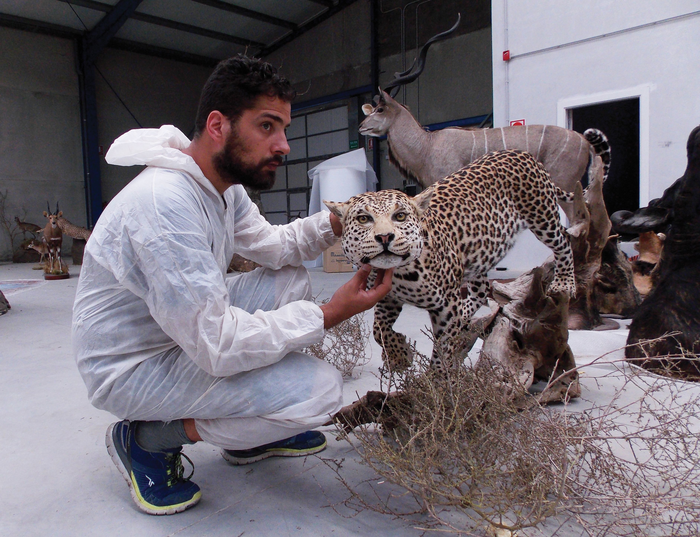
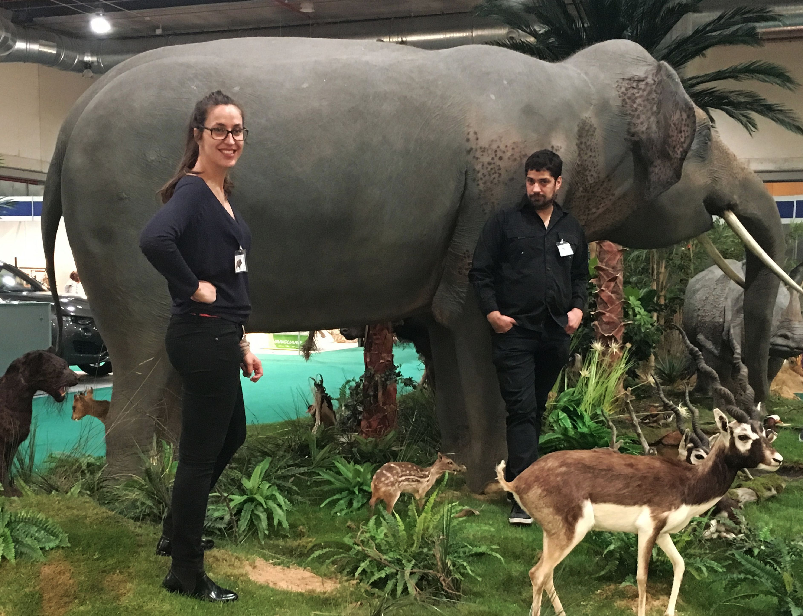

Three generations of taxidermists, now working from Reading.
Wild Nature Studio is a family-run taxidermy, diorama and replica studio with over 70 years of combined experience across Argentina, South Africa, the US and Spain — and, more recently, the UK.
A family workshop built on generations of craft.
Wild Nature Studio is a family run company, consisting of three generations of taxidermists. Our company has been offering taxidermy and dioramas services for over 70 years in Argentina, South Africa, the US, Spain and more recently in Reading, UK, from where we are now based.
Our client base — which includes public and private museums, philanthropists, collectors and companies — is testimony to the quality of service we provide. Extensive expertise in anatomy, sculpture, painting and tanning allows our team to offer a wide range of services, from taxidermy and dioramas to cases and domes, restoration and replicas.

In the workshopTwo generations, one craft.
“I started working with our father when I was 15 years old. It was at this age I developed an interest in the ancient art of preparing, stuffing and mounting of animal skins. Later, I specialised my skills in bringing taxidermy, restoration and dioramas services to collectors and museums.”
Ricardo Varela — Taxidermist“I grew up surrounded by a family of taxidermists. As a child I developed a love of nature and wildlife which has continued in my work today as a dioramas and taxidermist assistant in our family company.”
Maria Varela — Taxidermist AssistantFrom a single mount to a full habitat diorama.
We faithfully create unique spaces, keeping in mind the geological and geographical peculiarities of each environment, along with its flora and fauna — from desert and polar landscapes to jungles and ponds.

Wild Nature Studio at a trade exhibitionHave a piece in mind?
Whether it's a single mount or a full-scale habitat, we'd like to hear about it.